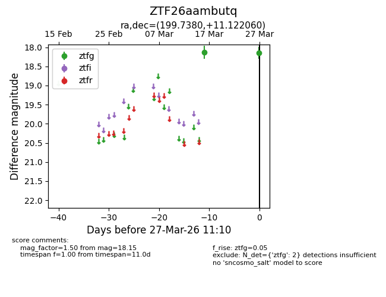
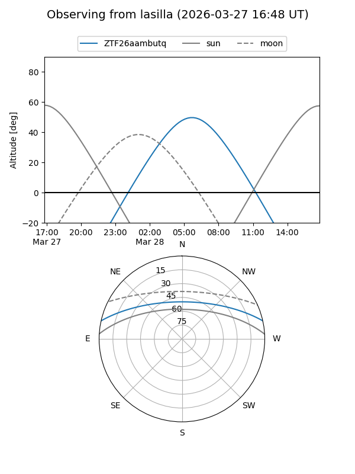
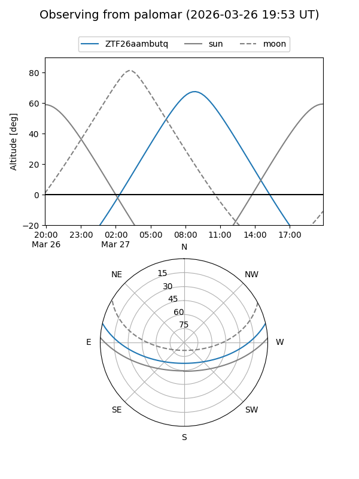

ZTF26aambutq
Target ZTF26aambutq at 2026-03-27 11:13
Aliases and brokers:
FINK: link
Lasair: link
ALeRCE: link
alt names
ZTF26aambutq (ztf,fink_ztf)
Coordinates:
equatorial (ra, dec) = 199.7380,+11.12206
equatorial (HMS+DMS) = 13:18:57.12,+11:07:19.42
galactic (l, b) = (326.2585,+72.73578)
Flags:
Photometry:
last ztfg=18.15
2 ztfg detections
Lightcurve

Visibility


Additional plots